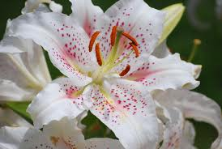

Lys

Lys (Lilium de la famille des Liliacées)
Attention : hautement toxique par ingestion pour le Korat !
Partie toxique pour les chats en général et le Korat en particulier :
Les marrons, les jeunes feuilles ainsi que les bourgeons.
Symptômes du processus pathologique :
Après quelques heures, hyper salivation, vomissements, perte d'appétit. En 2 à 3 jours, déshydratation, troubles nerveux (ataxie, dépression, convulsions), œdèmes de la face et des membres, dyspnée. Insuffisance rénale avec anurie, urémie, créatininémie, polyurie, protéinurie, glycosurie et cylindres tubulaires épithéliaux. Souvent mortel en 3 à 6 jours.
Lésions : nécrose tubulaire sévère et diffuse.
Origine de la toxicité (principe actif) :
Colchicine.